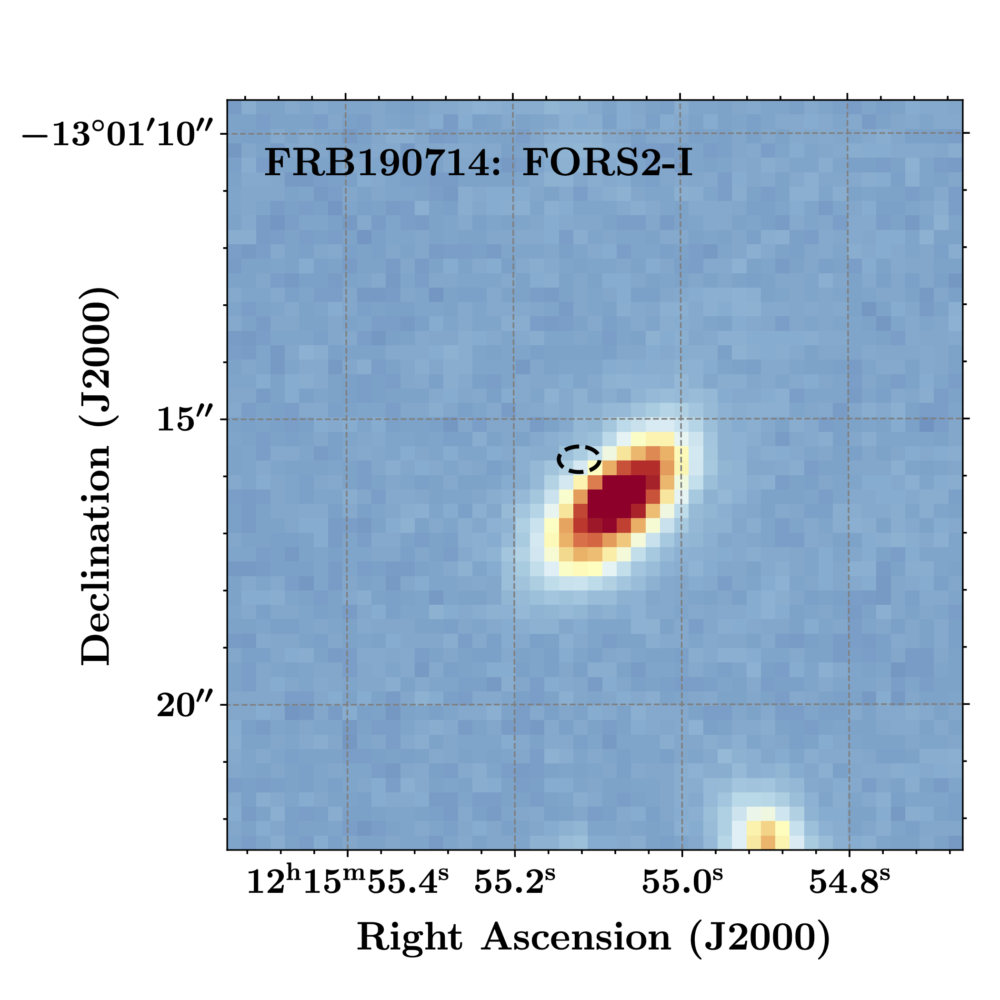

FRB 190714
Image from Heintz et al. (2020)
Summary
- Detected by: ASKAP-ICS
- FRB coordinates (RA, Dec): 12:15:55.12 -13:01:15.7 (J2000)
- Host coordinates (RA, Dec): 12:15:55.09 -13:01:16.0 (J2000)
- Redshift: 0.2365
- Observed DM: 504.1 pc cm-3
- Repeating: No
- References: Heintz et al. (2020)
Host galaxy properties
| Quantity | Measured value | Unit |
|---|---|---|
| Stellar mass | (1.49 ± 0.71) × 1010 | M⊙ |
| Star formation rate | 0.65 ± 0.20 | M⊙/yr |
| Metallicity | 9.03 ± 0.04 | 12+log(O/H) |
| E(B-V) | 0.80 ± 0.09 | mag |
| Absolute r-band mag. | -19.92 ± 0.05 | mag |
| u - r color (rest-frame) | 1.19 ± 0.17 | mag |
| Half-light radius | 3.94 ± 0.05 | kpc |
| FRB offset from galaxy center | 1.88 ± 0.62 | kpc |
Emission line fluxes
| Emission line | Measured value |
|---|---|
| Hα | 3.89 ± 0.03 |
| Hβ | 0.97 ± 0.03 |
| [OIII] λ 5007 | 0.31 ± 0.03 |
| [NII] λ 6584 | 1.70 ± 0.03 |
Photometry
| Telescope | Filter (eff. wavelength) | Magnitude |
|---|---|---|
| Pan-STARRS | g (481 nm) | 21.20 ± 0.04 |
| Pan-STARRS | r (617 nm) | 20.69 ± 0.03 |
| Pan-STARRS | i (752 nm) | 20.38 ± 0.02 |
| Pan-STARRS | z (866 nm) | 20.05 ± 0.03 |
| Pan-STARRS | y (962 nm) | 20.04 ± 0.05 |
| VISTA | J (1252 nm) | 17.56 ± 0.09 |
| VISTA | H (1645 nm) | 17.06 ± 0.10 |
| VISTA | K (2147 nm) | 16.47 ± 0.20 |
| HST/WFC3 | F160W (1.6 μm) | 18.879 ± 0.002 |